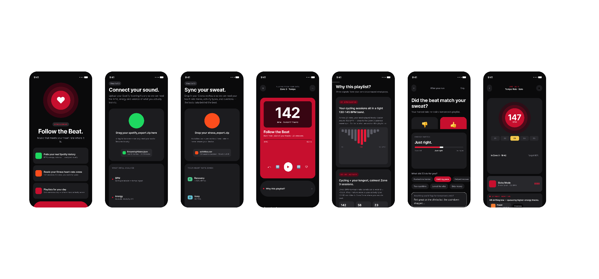
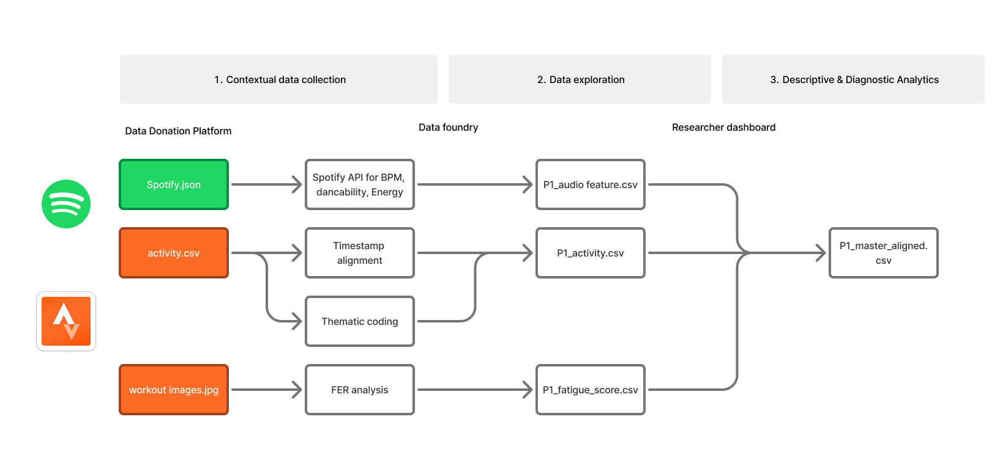
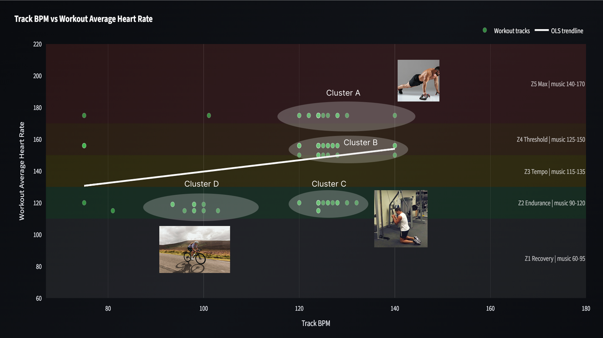
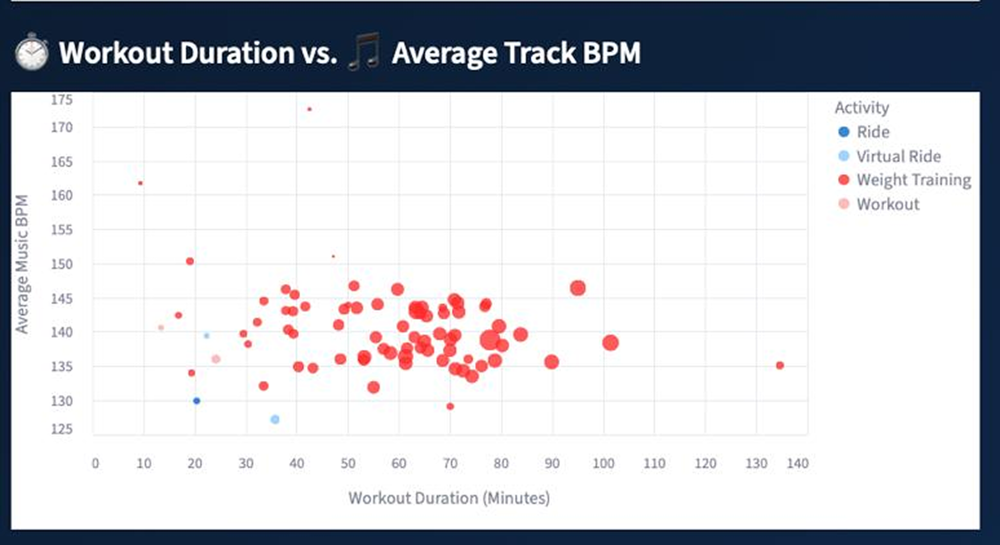
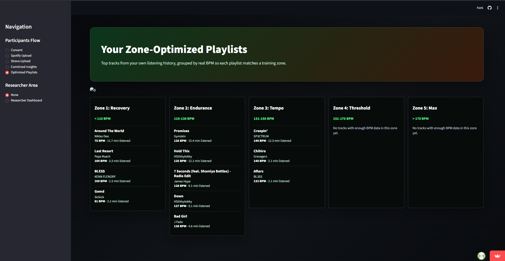

Multi-source data analysis
Spotify + Strava pipeline: time-series matching, cleaning, audio features and correlation analysis.
AI music recommendation for workouts
A data-driven workout music recommender built on people's own Spotify, Strava and heart-rate data, from data collection and analysis to recommendation logic and an interactive prototype.
View project source
Workout music is rarely personal. Playlists don't know your training, your heart rate or how hard the session feels.
Track tempo didn't track heart rate (r = +0.05, 232 pairs). Music drove motivation and staying power.
From “control your heart rate” to matching music to your state and your own habits.
Follow the Beat: data upload → state detection → recommendation → feedback, using zone playlists from your own library.
Spotify + Strava pipeline: time-series matching, cleaning, audio features and correlation analysis.
Combined analysis and interviews to move the goal from heart-rate control to state matching, and defined the four core inputs.
Zone + personal-history logic with BPM clustering, and the Follow the Beat web prototype.
Participatory data interviews using people's own charts; turned findings into the next model inputs.
01 · Problem
Streaming apps recommend by genre and mood. None of them look at the session itself: what you're doing, how hard your heart is working, how tired you feel.
We asked how a connected product could use people's own music and training data to suggest music that either pushes them into a higher heart-rate zone or guides them into recovery.
Two sub-questions: do heart-rate zones line up with the energy and valence of the music played, and do people pick high-energy music on purpose, or does music shift heart rate without them noticing?
02 · Data · contribution 01
Spotify listening history · Strava workouts, heart rate, perceived effort, notes
Each track mapped to the workout window it ended in
Outliers removed; BPM, Energy, Valence, Danceability; five heart-rate zones
Correlations between music features, heart rate and workout duration
track–workout matches for the first participant, only 49 with BPM data
workout sessions from 3 participants
matched track–workout pairs in the final cohort
The 112 → 49 gap was the first clue. Instead of filling it in, we asked the participant why: he played music on the bike but rarely in the gym. The gap was behavior, not noise, and it pointed to activity type as a variable we had to model.


03 · Insight · contribution 02
No meaningful link between track tempo and heart rate across 232 pairs.


BPM vs. workout duration: r = +0.24, in the same direction for every participant. Tempo related to sustained effort, not peak heart rate.
“Sometimes when I'm not that motivated, I try to find external motivation, either by working with someone else or by choosing my music.”
All three participants described music as a way to get into the right headspace, not as something that changes their body.
Music is part of the workout. The system recommends.
Conversation replaces music, and activity type follows the group. The system steps back.
Control heart rate: prescribe tempo to push people into a target zone.
State matching: music that fits the current session and the person's own training habits.
A per-session input, since it shifts with who you train with.
Locates the current zone.
BPM, Energy, Valence.
Familiar tracks are more likely to be played.
04 · Recommendation logic · contribution 03
Push, maintain or recover sets the target zone for the session.
Each track from your workout history goes into one of five BPM bands.
Within a zone, tracks are ranked by how long you played them during workouts.
The zone playlist plays, with a “Why this playlist?” panel.
< 110 BPM
110–130 BPM
131–150 BPM
151–170 BPM
> 170 BPM
When Spotify had no BPM for a track, the pipeline fell back to other sources (SongBPM, Deezer, then a genre estimate) and kept the source visible, so a guessed tempo never looked like a measured one.

05 · Product · contribution 03
Spotify history and Strava activities, parsed on the device.
Activity type, goal and live heart rate set the target zone.
A zone playlist from your own library, with the reasoning one tap away.
“Did the beat match your sweat?” Match rating and effect feed the next session.
Consent, upload, review and a first look at your own music–workout history. Also the base for the interviews.
Streamlit + Plotly: cohort overview, music × heart rate, duration × effort, text sentiment (VADER) and a recommendation simulator for testing the logic.
06 · Validation · contribution 04
Each participant saw their own BPM–heart-rate chart and their zone playlists, then took the playlists into their workouts on Spotify.
Instead of judging an abstract concept, they confirmed or contested patterns in their own data. We coded the interviews with reflexive thematic analysis.
Participants recognized most of the recommended tracks, but weren't sure the tracks would give them the same feeling mid-workout.
Used to get into the right headspace, and shaped by the type of activity.
Genre playlists picked by mood (techno, “darker rap, more aggressive”), not matched to a zone.
Lyrics, emotion and memories shape the experience; BPM can't see them.
“Maybe the song lyrics are very depressing, but you want something that pumps you up and also switches things up.”
The gap between the recommendation and the experience pointed to what the model needs next.
Lyrics emotion and personal memories shape music choice, and audio features miss both.
Add emotion tags and a hype check-in before and after each session, and learn which tracks consistently motivate each person.
Exploratory study · 3 participants · 13 sessions · 232 track–workout pairs.
Return to selected work